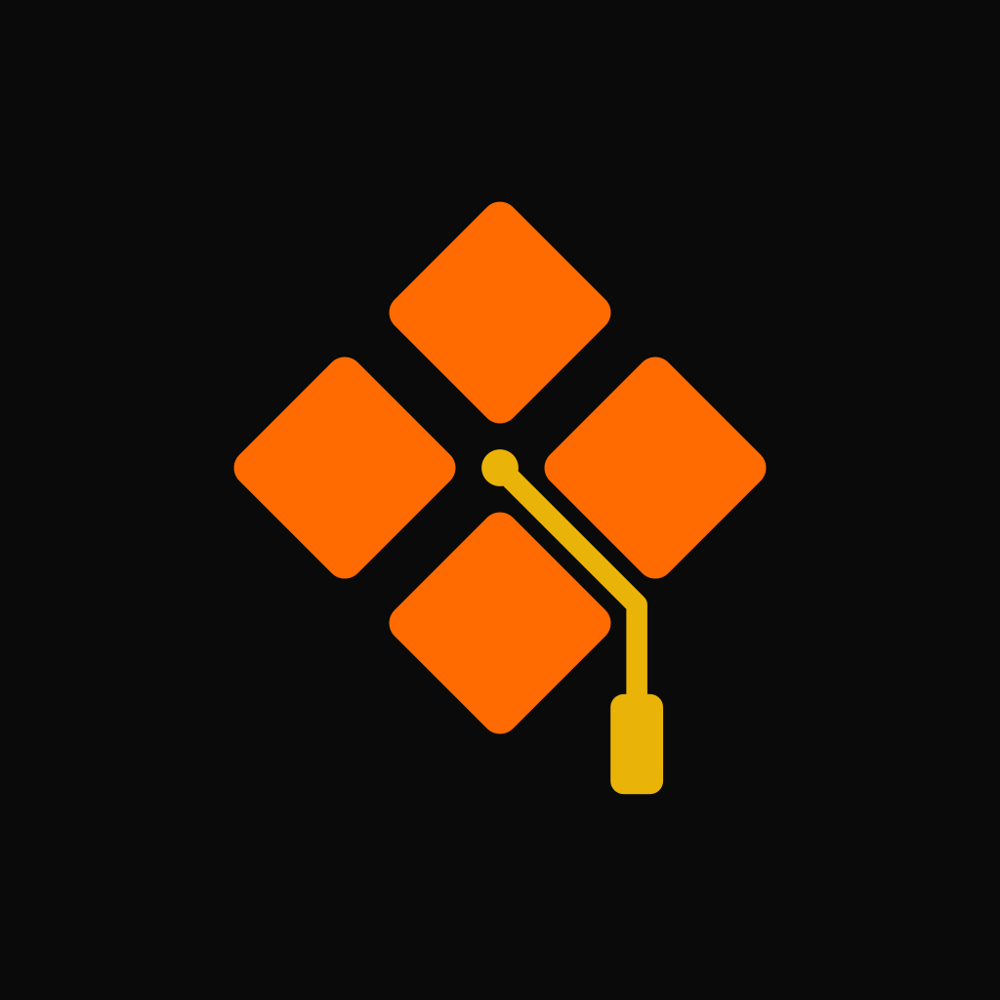
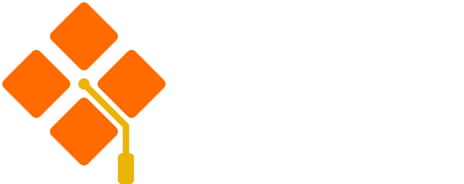
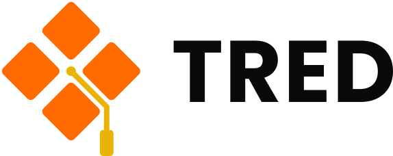
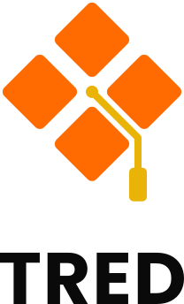
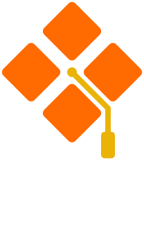
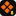
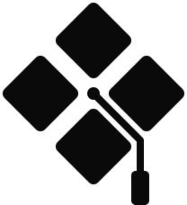
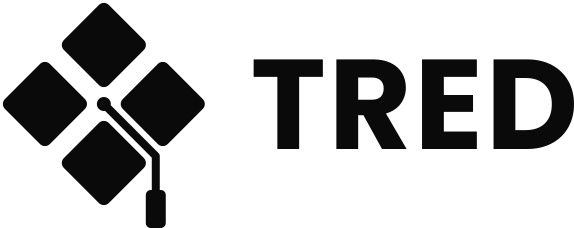
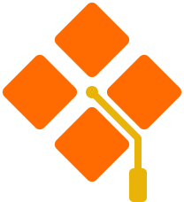

Icône d’app

Stores, écran d’accueil, PWA. Fond Nuit plein cadre : c’est le système qui arrondit les coins.


Concept A « Boutons-Toque » : vue de dessus, la toque est un losange coupé en quatre boutons de manette, et le cordon du gland passe dans le vide qui les sépare. Couleurs exactes de la palette TRED Signal.
Chaque format sur fond clair à gauche et sur fond Nuit à droite. Les liens ouvrent les fichiers SVG eux-mêmes.

Stores, écran d’accueil, PWA. Fond Nuit plein cadre : c’est le système qui arrondit les coins.
Barre latérale, en-tête, signature d’e-mail.


Affiches, flyers, écran de démarrage, stand.

Onglet du navigateur. Dessiné pour 16 px : boutons agrandis, cordon retiré, la houppe or reste.


Impression une couleur, gravure, tampon, documents officiels.
tred-symbol-black.svg · symbole blanc · horizontal noir · horizontal blanc · vertical noir · vertical blanc

Symbole seul, sans fond : sur photo, vidéo ou slide. Le damier montre la transparence.
Hauteur exacte en pixels CSS, les mêmes fichiers. Sur téléphone, chaque tableau défile horizontalement.
| Format | 16 px | 32 px | 64 px | 256 px |
|---|---|---|---|---|
| Icône d’app | ||||
| Horizontal | ||||
| Vertical | ||||
| Favicon | ||||
| Monochrome | ||||
| Transparent |
| Format | 16 px | 32 px | 64 px | 256 px |
|---|---|---|---|---|
| Icône d’app | ||||
| Horizontal | ||||
| Vertical | ||||
| Favicon | ||||
| Monochrome | ||||
| Transparent |
Rendus réels à 16 et 32 px, agrandis sans lissage : c’est ce que voit l’œil dans un onglet ou une liste d’apps.
Trois emplacements courants, pour juger le logo en contexte et pas seulement isolé.
Onglet du navigateur, thème clair et sombre
Écran d’accueil d’un téléphone
Barre latérale de l’app
Tous mesurés sur les fichiers de ce dossier, sauf la lisibilité, qui est un jugement à partir des rendus ci-dessus.
Le favicon est dessiné pour 16 px : quatre boutons et la houppe or. Sur le symbole complet, le cordon disparaît sous 32 px ; c’est attendu, d’où le favicon dédié.
La silhouette (quatre losanges + gland) tient seule en noir et en blanc.
L’orange fait 6,93:1 sur Nuit et 2,85:1 sur blanc. Les logos sont exemptés de la règle WCAG, et le gland or se lit sur les deux fonds.
13 fichiers sur 13 : 26,7 ko → 17,5 ko (−34 %). Rendu identique (écart ≤ 7/255, aucun pixel au-delà de 8, sauf 6 pixels de bord de l’icône d’app à 28/255). Réglage SVGO à garder : pas de fusion des tracés, pas de simplification des courbes, sinon le monochrome et le mot du logo vertical bougent.
0 balise <text>, 0 police, 0 image, 0 masque, 0 trait : uniquement des tracés pleins. « TRED » est en Poppins Bold converti en courbes.
Symboles et favicon 100/100, icône d’app 99/100, logos 90 et 91/100. Seul avertissement : l’angle de 61° de la jambe du R, dessiné ainsi dans Poppins.
-on-dark ; en une seule couleur, -black ou -white.